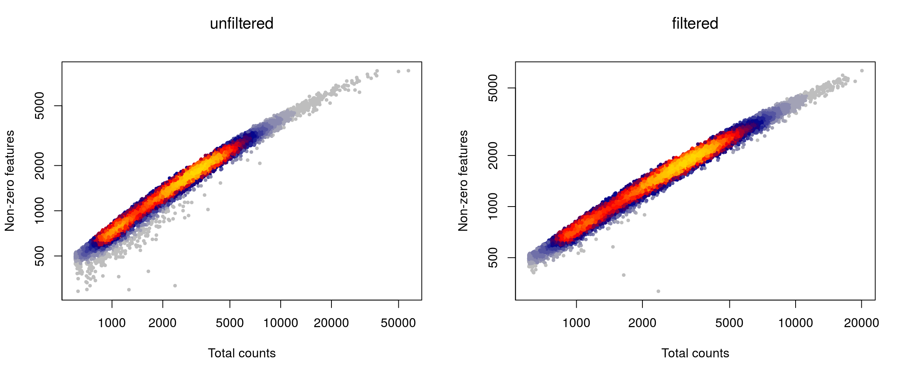
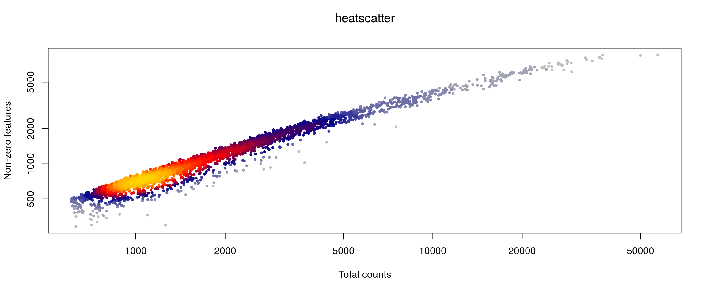

Preprocessing
Pierre-Luc Germain
Institute for Molecular Life Sciences, University of Zurich, SwitzerlandHelena L. Crowell
Institute for Molecular Life Sciences, University of Zurich, SwitzerlandMarch 13, 2019
Last updated: 2019-03-13
Checks: 6 0
Knit directory: MAGL/
This reproducible R Markdown analysis was created with workflowr (version 1.2.0). The Report tab describes the reproducibility checks that were applied when the results were created. The Past versions tab lists the development history.
Great! Since the R Markdown file has been committed to the Git repository, you know the exact version of the code that produced these results.
Great job! The global environment was empty. Objects defined in the global environment can affect the analysis in your R Markdown file in unknown ways. For reproduciblity it’s best to always run the code in an empty environment.
The command set.seed(20190311) was run prior to running the code in the R Markdown file. Setting a seed ensures that any results that rely on randomness, e.g. subsampling or permutations, are reproducible.
Great job! Recording the operating system, R version, and package versions is critical for reproducibility.
Nice! There were no cached chunks for this analysis, so you can be confident that you successfully produced the results during this run.
Great! You are using Git for version control. Tracking code development and connecting the code version to the results is critical for reproducibility. The version displayed above was the version of the Git repository at the time these results were generated.
Note that you need to be careful to ensure that all relevant files for the analysis have been committed to Git prior to generating the results (you can use wflow_publish or wflow_git_commit). workflowr only checks the R Markdown file, but you know if there are other scripts or data files that it depends on. Below is the status of the Git repository when the results were generated:
Ignored files:
Ignored: MAGL/.DS_Store
Ignored: MAGL/analysis/.DS_Store
Ignored: MAGL/data/
Ignored: MAGL/output/
Note that any generated files, e.g. HTML, png, CSS, etc., are not included in this status report because it is ok for generated content to have uncommitted changes.
These are the previous versions of the R Markdown and HTML files. If you’ve configured a remote Git repository (see ?wflow_git_remote), click on the hyperlinks in the table below to view them.
| File | Version | Author | Date | Message |
|---|---|---|---|---|
| Rmd | eaed7ec | HelenaLC | 2019-03-11 | initial commit |
Load packages
suppressPackageStartupMessages({
library(cowplot)
library(ggplot2)
library(scater)
library(SingleCellExperiment)
})Warning: Paket 'scater' wurde unter R Version 3.5.2 erstelltWarning: Paket 'SingleCellExperiment' wurde unter R Version 3.5.2 erstelltWarning: Paket 'GenomeInfoDb' wurde unter R Version 3.5.2 erstelltLoad & reformat data
# load raw counts
fastq_dirs <- list.dirs("data", recursive = FALSE, full.names = TRUE)
names(fastq_dirs) <- basename(fastq_dirs)
sce <- DropletUtils::read10xCounts(fastq_dirs)
# rename row/colData & dimnames
names(rowData(sce)) <- c("feature", "symbol")
names(colData(sce)) <- c("sample_id", "barcode")
sce$sample_id <- factor(basename(sce$sample_id))
dimnames(sce) <- list(
with(rowData(sce), paste(feature, symbol, sep = ".")),
with(colData(sce), paste(barcode, sample_id, sep = ".")))
# load metadata
md_dir <- file.path("data", "metadata.xlsx")
md <- readxl::read_excel(md_dir)
m <- match(sce$sample_id, md$`Sample ID`)
sce$group_id <- md$Characteristics[m]
# remove undetected genes
sce <- sce[Matrix::rowSums(counts(sce) > 0) > 0, ]
dim(sce)[1] 22963 30185Calculate QC Metrics
(mito <- grep("mt-", rownames(sce), value = TRUE)) [1] "ENSMUSG00000064341.mt-Nd1" "ENSMUSG00000064345.mt-Nd2"
[3] "ENSMUSG00000064351.mt-Co1" "ENSMUSG00000064354.mt-Co2"
[5] "ENSMUSG00000064356.mt-Atp8" "ENSMUSG00000064357.mt-Atp6"
[7] "ENSMUSG00000064358.mt-Co3" "ENSMUSG00000064360.mt-Nd3"
[9] "ENSMUSG00000065947.mt-Nd4l" "ENSMUSG00000064363.mt-Nd4"
[11] "ENSMUSG00000064367.mt-Nd5" "ENSMUSG00000064368.mt-Nd6"
[13] "ENSMUSG00000064370.mt-Cytb"sce <- calculateQCMetrics(sce, feature_controls = list(Mt = mito))
plotHighestExprs(sce, n = 20)
Filtering
# get sample-specific outliers
cols <- c("total_counts", "total_features_by_counts", "pct_counts_Mt")
log <- c(TRUE, TRUE, FALSE)
type <- c("both", "both", "higher")
drop_cols <- paste0(cols, "_drop")
for (i in seq_along(cols))
colData(sce)[[drop_cols[i]]] <- isOutlier(sce[[cols[i]]],
nmads = 2.5, type = type[i], log = log[i], batch = sce$sample_id)
sapply(drop_cols, function(i)
sapply(drop_cols, function(j)
sum(sce[[i]] & sce[[j]]))) total_counts_drop
total_counts_drop 162
total_features_by_counts_drop 79
pct_counts_Mt_drop 38
total_features_by_counts_drop
total_counts_drop 79
total_features_by_counts_drop 94
pct_counts_Mt_drop 31
pct_counts_Mt_drop
total_counts_drop 38
total_features_by_counts_drop 31
pct_counts_Mt_drop 3451cd <- data.frame(colData(sce))
ps <- lapply(seq_along(cols), function (i) {
p <- ggplot(cd, aes_string(x = cols[i], alpha = drop_cols[i])) +
geom_histogram(bins = 100, show.legend = FALSE) +
scale_alpha_manual(values = c("FALSE" = 1, "TRUE" = 0.4)) +
facet_wrap(~sample_id, ncol = 1, scales = "free") +
theme_classic() + theme(strip.background = element_blank())
if (log[i])
p <- p + scale_x_log10()
return(p)
})
plot_grid(plotlist = ps, ncol = 3)
ol <- Matrix::rowSums(as.matrix(colData(sce)[drop_cols])) != 0
plot_grid(nrow = 1, labels = c("unfiltered", "filtered"),
LSD::heatscatter(sce$total_counts, sce$total_features_by_counts,
xlab = "Total counts", ylab = "Non-zero features", log="xy"),
LSD::heatscatter(sce$total_counts[ol], sce$total_features_by_counts[ol],
xlab = "Total counts", ylab = "Non-zero features", log="xy"))
# summary of cells kept
ns <- table(sce$sample_id)
ns_fil <- table(sce$sample_id[!ol])
print(rbind(
unfiltered = ns, filtered = ns_fil,
"%" = ns_fil / ns * 100), digits = 0) LC016 LC017 LC019 LC020 LC022 LC023 LC025 LC026
unfiltered 4553 2420 2947 4430 3783 3529 3347 5176
filtered 4084 2124 2415 3547 3408 3264 3010 4755
% 90 88 82 80 90 92 90 92# drop outlier cells
sce <- sce[, !ol]
dim(sce)[1] 22963 26607# require count > 1 in at least 20 cells
sce <- sce[Matrix::rowSums(counts(sce) > 1) >= 20, ]
dim(sce)[1] 11309 26607Save objects
saveRDS(sce, "output/MAGL-SCE_filtered.rds")Session info
sessionInfo()R version 3.5.1 (2018-07-02)
Platform: x86_64-apple-darwin15.6.0 (64-bit)
Running under: macOS 10.14.3
Matrix products: default
BLAS: /Library/Frameworks/R.framework/Versions/3.5/Resources/lib/libRblas.0.dylib
LAPACK: /Library/Frameworks/R.framework/Versions/3.5/Resources/lib/libRlapack.dylib
locale:
[1] C/UTF-8/C/C/C/C
attached base packages:
[1] parallel stats4 stats graphics grDevices utils datasets
[8] methods base
other attached packages:
[1] scater_1.10.1 SingleCellExperiment_1.4.1
[3] SummarizedExperiment_1.12.0 DelayedArray_0.8.0
[5] BiocParallel_1.16.6 matrixStats_0.54.0
[7] Biobase_2.42.0 GenomicRanges_1.34.0
[9] GenomeInfoDb_1.18.2 IRanges_2.16.0
[11] S4Vectors_0.20.1 BiocGenerics_0.28.0
[13] cowplot_0.9.4 ggplot2_3.1.0
loaded via a namespace (and not attached):
[1] locfit_1.5-9.1 Rcpp_1.0.0
[3] lattice_0.20-38 assertthat_0.2.0
[5] rprojroot_1.3-2 digest_0.6.18
[7] cellranger_1.1.0 R6_2.4.0
[9] plyr_1.8.4 backports_1.1.3
[11] evaluate_0.13 pillar_1.3.1
[13] zlibbioc_1.28.0 rlang_0.3.1
[15] readxl_1.3.0 lazyeval_0.2.1
[17] whisker_0.3-2 Matrix_1.2-16
[19] rmarkdown_1.11 labeling_0.3
[21] stringr_1.4.0 RCurl_1.95-4.12
[23] munsell_0.5.0 HDF5Array_1.10.1
[25] compiler_3.5.1 vipor_0.4.5
[27] xfun_0.5 DropletUtils_1.2.2
[29] pkgconfig_2.0.2 ggbeeswarm_0.6.0
[31] htmltools_0.3.6 tidyselect_0.2.5
[33] tibble_2.0.1 gridExtra_2.3
[35] GenomeInfoDbData_1.2.0 edgeR_3.24.3
[37] workflowr_1.2.0 viridisLite_0.3.0
[39] crayon_1.3.4 dplyr_0.8.0.1
[41] withr_2.1.2 bitops_1.0-6
[43] grid_3.5.1 gtable_0.2.0
[45] git2r_0.24.0 magrittr_1.5
[47] scales_1.0.0 LSD_4.0-0
[49] stringi_1.3.1 XVector_0.22.0
[51] reshape2_1.4.3 viridis_0.5.1
[53] fs_1.2.6 limma_3.38.3
[55] DelayedMatrixStats_1.4.0 Rhdf5lib_1.4.2
[57] tools_3.5.1 glue_1.3.0
[59] beeswarm_0.2.3 purrr_0.3.1
[61] yaml_2.2.0 colorspace_1.4-0
[63] rhdf5_2.26.2 knitr_1.22
sessionInfo()R version 3.5.1 (2018-07-02)
Platform: x86_64-apple-darwin15.6.0 (64-bit)
Running under: macOS 10.14.3
Matrix products: default
BLAS: /Library/Frameworks/R.framework/Versions/3.5/Resources/lib/libRblas.0.dylib
LAPACK: /Library/Frameworks/R.framework/Versions/3.5/Resources/lib/libRlapack.dylib
locale:
[1] C/UTF-8/C/C/C/C
attached base packages:
[1] parallel stats4 stats graphics grDevices utils datasets
[8] methods base
other attached packages:
[1] scater_1.10.1 SingleCellExperiment_1.4.1
[3] SummarizedExperiment_1.12.0 DelayedArray_0.8.0
[5] BiocParallel_1.16.6 matrixStats_0.54.0
[7] Biobase_2.42.0 GenomicRanges_1.34.0
[9] GenomeInfoDb_1.18.2 IRanges_2.16.0
[11] S4Vectors_0.20.1 BiocGenerics_0.28.0
[13] cowplot_0.9.4 ggplot2_3.1.0
loaded via a namespace (and not attached):
[1] locfit_1.5-9.1 Rcpp_1.0.0
[3] lattice_0.20-38 assertthat_0.2.0
[5] rprojroot_1.3-2 digest_0.6.18
[7] cellranger_1.1.0 R6_2.4.0
[9] plyr_1.8.4 backports_1.1.3
[11] evaluate_0.13 pillar_1.3.1
[13] zlibbioc_1.28.0 rlang_0.3.1
[15] readxl_1.3.0 lazyeval_0.2.1
[17] whisker_0.3-2 Matrix_1.2-16
[19] rmarkdown_1.11 labeling_0.3
[21] stringr_1.4.0 RCurl_1.95-4.12
[23] munsell_0.5.0 HDF5Array_1.10.1
[25] compiler_3.5.1 vipor_0.4.5
[27] xfun_0.5 DropletUtils_1.2.2
[29] pkgconfig_2.0.2 ggbeeswarm_0.6.0
[31] htmltools_0.3.6 tidyselect_0.2.5
[33] tibble_2.0.1 gridExtra_2.3
[35] GenomeInfoDbData_1.2.0 edgeR_3.24.3
[37] workflowr_1.2.0 viridisLite_0.3.0
[39] crayon_1.3.4 dplyr_0.8.0.1
[41] withr_2.1.2 bitops_1.0-6
[43] grid_3.5.1 gtable_0.2.0
[45] git2r_0.24.0 magrittr_1.5
[47] scales_1.0.0 LSD_4.0-0
[49] stringi_1.3.1 XVector_0.22.0
[51] reshape2_1.4.3 viridis_0.5.1
[53] fs_1.2.6 limma_3.38.3
[55] DelayedMatrixStats_1.4.0 Rhdf5lib_1.4.2
[57] tools_3.5.1 glue_1.3.0
[59] beeswarm_0.2.3 purrr_0.3.1
[61] yaml_2.2.0 colorspace_1.4-0
[63] rhdf5_2.26.2 knitr_1.22